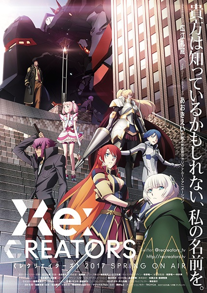
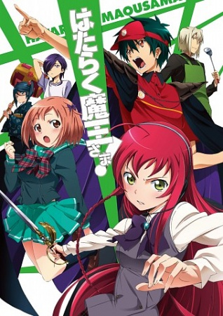
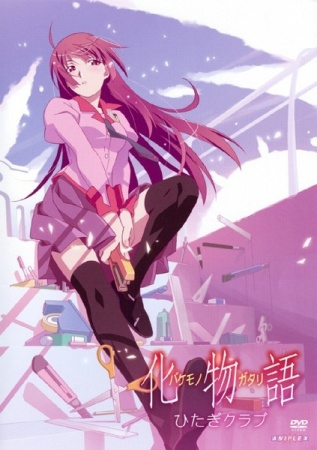
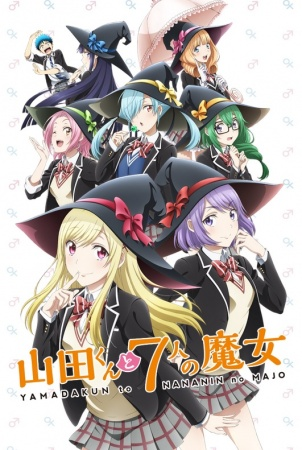
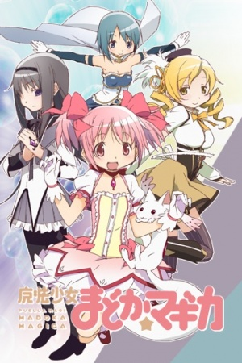
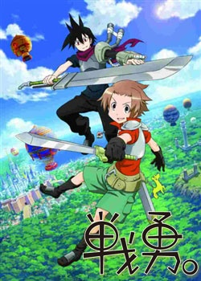

Marist College Anime Society
Home
Current Listings
(current)
About Us
Past Listings
Have an Idea or Suggestion for the Club? Click here!
Current Titles
Click one of the titles below for a quick summary.





